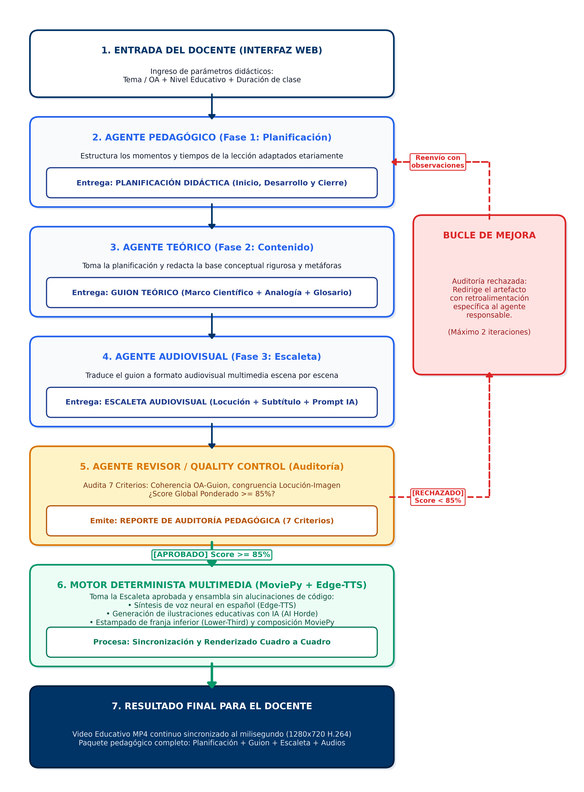

Sistema de IA Multiagente para el Diseño de Clases Multimedia Coherentes y Editables
Orquestación secuencial basada en Grafos Acíclicos Dirigidos (DAG) con LangGraph, bucles analíticos de control pedagógico y ensamblado determinista continuo en MoviePy.
La Falla Causal del Enfoque Monolítico (Single-Prompt)
Por qué un único llamado a un LLM no es viable para la producción pedagógica formal.
- Alucinación y Dispersión: Al pedir planificación, guion y locución en un solo prompt, el modelo olvida el Objetivo de Aprendizaje (OA).
- Desfase Locución-Pantalla: Lo que la voz sintetizada relata no coincide con lo que el estudiante ve proyectado.
- Sobrecarga Cognitiva: Textos extensos e inductores de fatiga que violan la teoría de aprendizaje multimedia (Sweller & Mayer).
- Complacencia sin Auditoría: El LLM no evalúa críticamente si su propia clase cumple con los estándares didácticos.
- Dependencias Reales Inmutables: La escaleta no puede nacer sin un guion aprobado, y el guion requiere la planificación pedagógica previa.
- Agentes Especializados Aislados: Cada agente opera con roles delimitados y esquemas JSON estrictos con Pydantic.
- Loops de Calidad Acotados: Bucle condicional (máx. 2 iteraciones) si la auditoría no alcanza el umbral mínimo del 85%.
- Desacople Determinista: La generación de video (MoviePy/FFmpeg) no depende de código generado por el LLM.
Arquitectura del Sistema Multiagente (Figura 1)
Topología de estados en LangGraph y separación del motor determinista multimedia.

Parámetros didácticos esenciales: Tema / OA + Nivel Educativo + Duración de clase.
• Agente Pedagógico: Planificación (Inicio, Desarrollo y Cierre).
• Agente Teórico: Guion Teórico (Marco conceptual y analogía).
• Agente Audiovisual: Escaleta (Locución y prompts de imagen).
Auditoría analítica con 7 criterios ponderados. Si Score < 85%, reenvía feedback correctivo acotado (máx. 2 iteraciones).
Ensamblado continuo con voz neural Edge-TTS e ilustraciones Stable Diffusion con franja inferior Lower-Third.
Pipeline Metodológico y Control de Calidad (Tabla 2)
Resumen riguroso de etapas, insumos, procesamiento, salidas y mecanismos de control.
| Fase / Módulo | Componente | Insumo (Input) | Procesamiento y Técnica | Salida y Control de Calidad |
|---|---|---|---|---|
| Fase 1: Planificación | Agente Pedagógico | OA, Nivel, Duración | Dosificación curricular por momentos (Inicio, Desarrollo, Cierre) | LessonPlan (JSON) · Loop 4 pasos (máx. 2) |
| Fase 2: Contenido | Agente Teórico | Planificación aprobada | Redacción conceptual rigurosa, analogías y glosario etario | TheoreticalScript (JSON) · Control de rigor |
| Fase 3: Escaleta | Agente Audiovisual | Plan + Guion aprobados | Guionización escena a escena, locución hablada y prompts visuales | AudiovisualStoryboard · Sincronía locución |
| Fase 4: Auditoría (QC) | Agente Revisor | Escaleta consolidada | Evaluación analítica cuantitativa con 7 criterios ponderados | AuditReport · Umbral Score ≥ 85% |
| Síntesis de Voz (TTS) | Edge-TTS Asíncrono | Locución (voiceover) | Síntesis neural en español de alta naturalidad | Pistas .mp3 · Medición de duración exacta |
| Ilustraciones con IA | Stable Diffusion + PIL | Prompts visuales en inglés | Inferencia generativa 16:9 y estampado de franja Lower-Third | Imágenes .jpg · Prompts negativos anti-deformación |
| Ensamblado Continuo | MoviePy / FFmpeg | Audios .mp3 + Imágenes .jpg | Concatenación continua cuadro a cuadro desacoplada de código LLM | Video final .mp4 (1280x720 H.264) continuo |
Demostración en Vivo del Producto Mínimo Viable (MVP)
Ejecución interactiva desde la interfaz web conectada a FastAPI y LangGraph.
Servidor Local FastAPI Activo
Ejecutando en http://127.0.0.1:8000 mediante iniciar_servidor.bat
- Ingresar OA: «La función del sistema circulatorio».
- Configurar Nivel: Educación Básica · Duración: 15 min.
- Observar progresión de nodos en LangGraph y Score QC (≥ 85%).
- Reproducir el video generado con subtítulos sincronizados.
Evaluación del Agente Revisor y Eficiencia Docente
Métricas empíricas alcanzadas en las pruebas automatizadas de la Entrega 2.
Umbral de aprobación: ≥ 85%
Criterio más ponderado (20%)
Cero desfases temporales
98% de reducción de tiempo
- 1. Alineación OA (20%): Verificación de que cada escena responda al objetivo.
- 2. Exactitud Conceptual (15%): Rigor científico y glosario etario.
- 3. Coherencia de Escenas (15%): Fluidez sin vacíos temáticos.
- 4. Factibilidad Temporal (10%): Ajuste a la duración configurada.
- 5. Correspondencia Locución-Imagen (15%): Sintonía audiovisual.
- 6. Densidad Didáctica (10%): Control de carga cognitiva por escena.
- 7. Trazabilidad de Fuentes (15%): Respaldo de afirmaciones técnicas.
El tiempo promedio requerido por un docente para preparar manualmente una clase multimedia breve (investigación, redacción de guion, búsqueda de imágenes libres de derechos, grabación de locución y edición de video) oscila entre 5 y 6 horas de trabajo no asistido.
El sistema multiagente reduce este proceso a 45 segundos de procesamiento determinista, entregando una clase validada pedagógicamente y 100% editable.
Hoja de Ruta hacia la Entrega 3 (E3)
Hitos clave de ingeniería de software planificados para la versión final de titulación.
Resolver el fenómeno de Attribute Binding Failure / Concept Bleeding en modelos de difusión abiertos (ej. evitar que al pedir un niño con su mascota se mezclen rasgos anatómicos).
• Incorporación de prompts negativos educativos.
• Integración de modelos de difusión de mayor resolución didáctica.
El docente requiere flexibilidad didáctica más allá de un video cerrado.
• Exportación del guion pedagógico en Word/PDF editable.
• Descarga de pistas de audio e imágenes independientes.
• Generación de paquetes estándar de e-learning (SCORM / HTML5) para Canvas y Moodle.
Reducción de latencia mediante paralelización y robustez para la defensa final.
• Paralelización asíncrona con asyncio.gather para síntesis concurrente.
• Sistema de caché local para activos frecuentes.
• Despliegue en entorno reproducible para la defensa final ante la comisión.
Conclusiones y Ronda de Preguntas
- Viabilidad de la Arquitectura DAG: La orquestación en grafos resolvió eficazmente la desalineación pedagógica de los enfoques monolíticos tradicionales.
- Determinismo Garantizado: El desacoplamiento entre el razonamiento de los LLMs y el motor MoviePy/Edge-TTS asegura un ensamblado continuo sin fallos de código.
- Madurez del MVP: Se logró un prototipo web interactivo 100% operativo con una auditoría pedagógica respaldada por un 90.4% de score global.
Muchas gracias. Quedamos a disposición de la comisión para la ronda de preguntas.